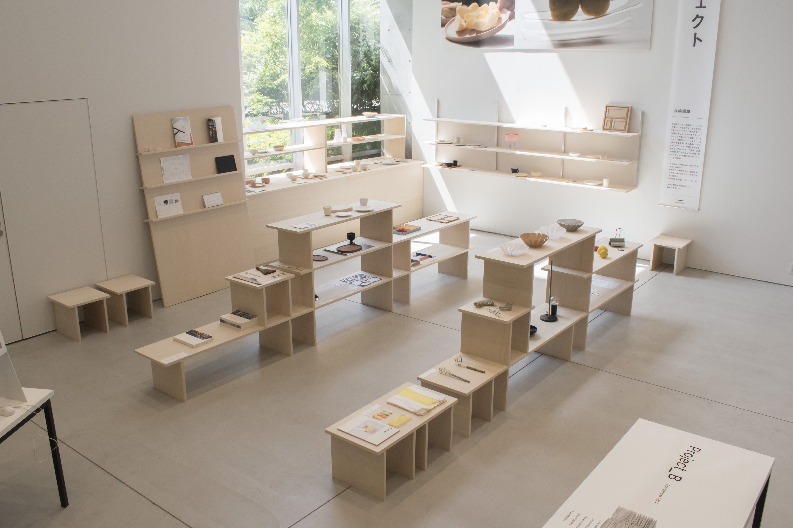
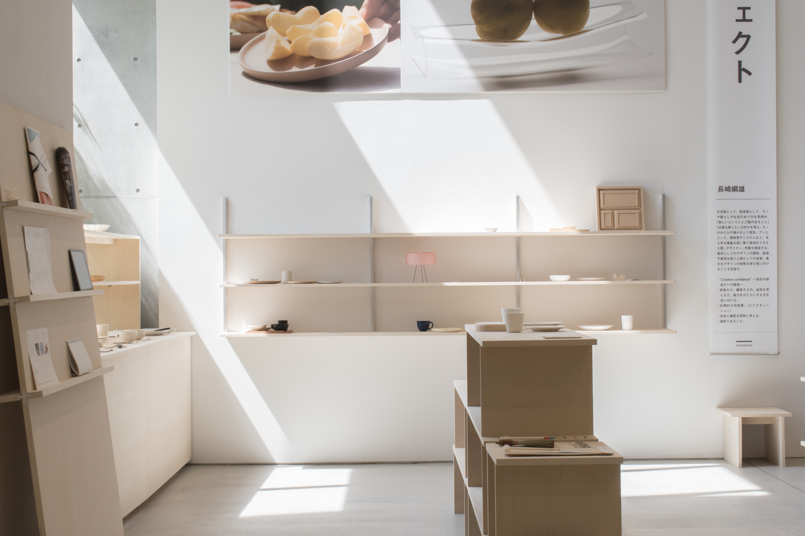
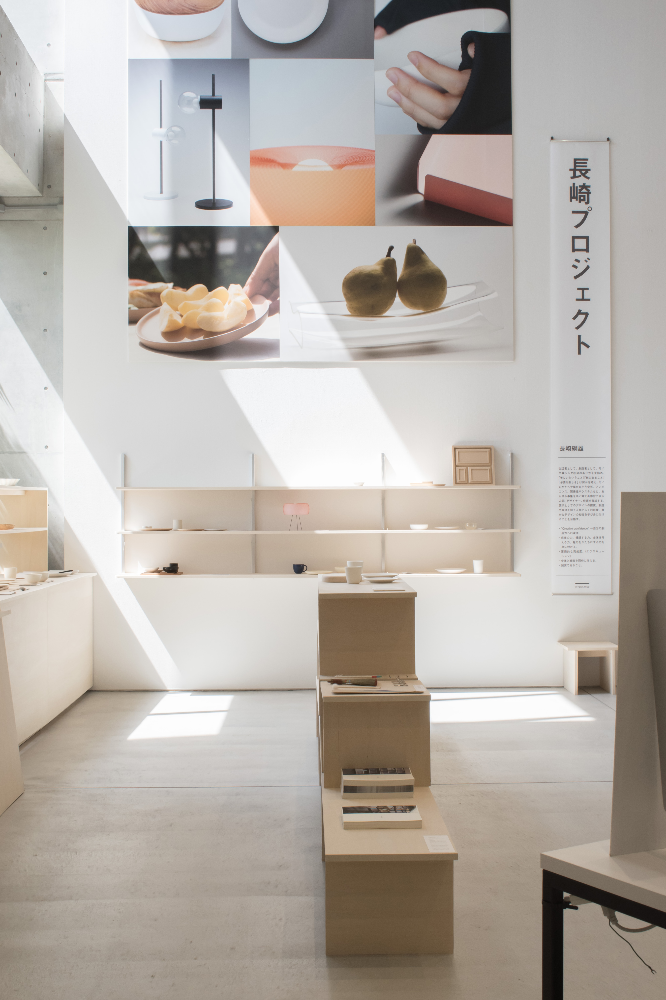
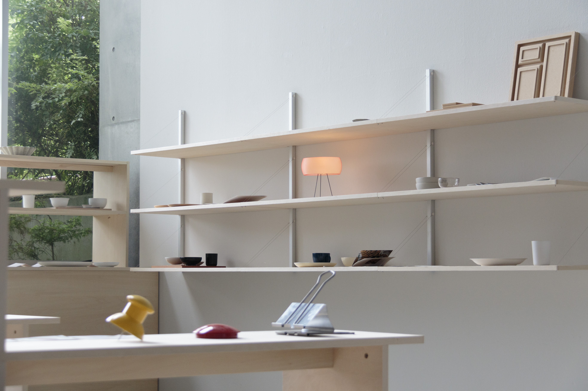
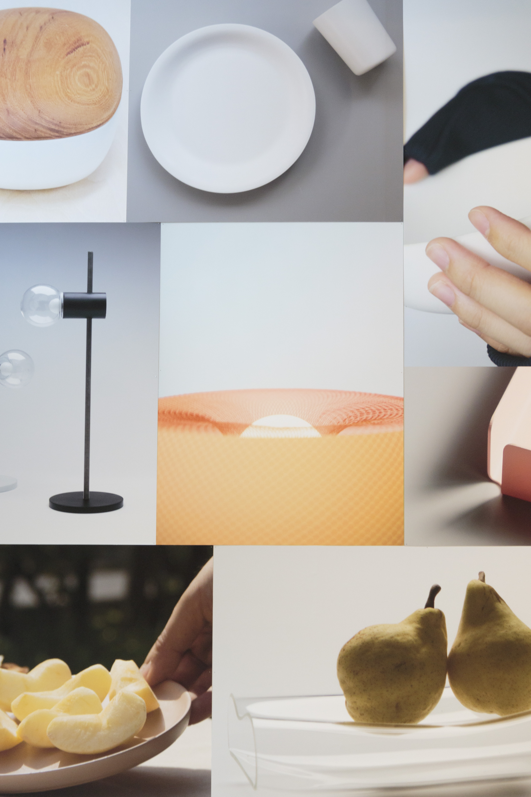
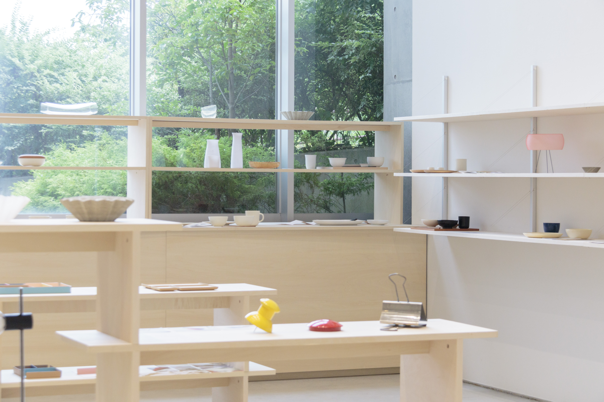

Project_A OpenCampus 2024
多摩美術大学統合デザイン学科長崎綱雄プロジェクトオープンキャンパス展示。展示対象はこれから 大学進学を考える高校生。私は主に、グラフィックを中心とした空間のアートディレクションやパネルデザインの制作を行いました。展示作品の「素敵な朝食」(お皿のデザイン)と「組み立て式の棚」を展示什器を課題として制作、展示。
[Exhibition]
CD : Tsunao Nagasaki
AD,D : Nozomi Terashima
Space Design : Koharu Miyata
Book Design : Sara Yoeyama
Motion Design : Seira Tomioka, Yuna Yokoyama,
Panel Design: Nozomi Terashima
Shelf Design : Project_A
CL: INTEGRATED DESIGN





